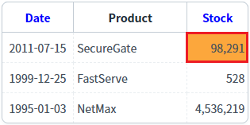
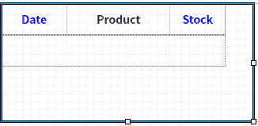
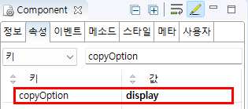
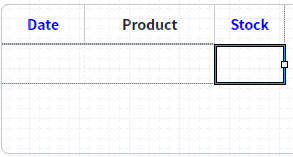

GridView의 'copyOption' 속성을 사용하여, 데이터 복사(Ctrl+C)를 할 때, 데이터의 출처를 설정한 예제입니다.
기본 동작은 GridView와 연결된 DataList의 값으로 복사되는 것이며, 설정을 통해 화면에 표시된 값을 복사하도록 변경할 수 있습니다.
복사할 데이터의 출처를 GridView 연결된 DataList의 값으로 설정하기
복사할 데이터의 출처를 GridView에 표시된 값으로 설정하기
GridView의 컬럼별 복사할 데이터 출처 설정하기
이 예제의 GridView는 같은 DataList와 연결되어있습니다. DataList의 값과 화면에 표시된 값이 다른 컬럼은 'Stock', 'Date' 입니다. 각 GridView의 컬럼 데이터를 복사(Ctrl+C)/붙여넣기(Ctrl+V)하여 복사된 값을 비교합니다.
이 예제의 데이터 복사는 키보드의 단축키(Ctrl+C)를 눌러 사용할 수 있으며, 셀(Cell) 단위로 동작합니다.
1
STEP 1: 복사할 셀(Cell)을 선택(클릭)합니다.
Image 1.실행된 화면 예시 이미지

2
STEP 2: 데이터를 복사합니다.
키보드 복사 단축키 'Ctrl + C'를 누릅니다.
3
STEP 3: 복사된 데이터를 확인합니다.
메모장, 엑셀 등의 에디터에서 붙여넣기(Ctrl + V)하여 복사된 데이터를 확인합니다.
Example 1.실행 결과
// 첫 번째 행의 'Stock' 컬럼을 복사한 경우 DataList의 값이 복사: '98291' 화면에 표시된 값이 복사: '98,291' // 첫 번째 행의 'Date' 컬럼을 복사한 경우 DataList의 값이 복사: '20110715' 화면에 표시된 값이 복사: '2011-07-15'
N/A
화면에 출력된 값이 복사된 경우는 98,291 이 복사됩니다.
DataList 생성 및 연결은 생략되었습니다.
1
STEP 1: 디자인탭에서 GridView를 선택합니다.
Image 2.웹스퀘어 스튜디오의 '디자인' 탭 예시 - GridView 선택

2
STEP 2: GridView의 속성을 설정합니다.
[필수]copyOption="display"
데이터 복사 시 화면에 표시된 값을 기준으로 복사합니다.
"dataList" (기본 값) : 데이터 복사 시 dataList에 들어있는 값을 기준으로 복사합니다.
"display" : 데이터 복사 시 화면에 표시된 값을 기준으로 복사합니다.
Image 3.웹스퀘어 스튜디오의 Component View - 속성 설정 예시

Example 2.Source
<!-- gridView 의 소스 본문 예시 --> <w2:gridView copyOption="display" dataList="data:dlt_exam" > <!-- 중략 --> </w2:gridView>
1
STEP 1: 디자인탭에서 GridView의 바디 컬럼를 선택합니다.
Image 4.웹스퀘어 스튜디오의 '디자인' 탭 예시 - GridView 바디 컬럼 선택

2
STEP 2: GridView 바디 컬럼의 속성을 설정합니다.
copyOption="display"
데이터 복사 시 화면에 표시된 값을 기준으로 복사합니다.
"dataList" (기본 값) : 데이터 복사 시 dataList에 들어있는 값을 기준으로 복사합니다.
"display" : 데이터 복사 시 화면에 표시된 값을 기준으로 복사합니다.
Image 5.웹스퀘어 스튜디오의 Component View - 속성 설정 예시
Example 3.Source
<!-- gridView 의 소스 본문 예시 --> <w2:gridView dataList="data:dlt_exam"> <!-- 중략 --> <w2:column copyOption="display" id="price" dataType="number" displayFormat="#,###"> </w2:column> <!-- 중략 --> </w2:gridView>
copyOption